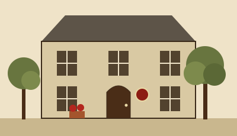

Étude Courtepaille
Notaires de père en fils depuis 1897 · Votre patrimoine mérite notre lenteur · 9 abonnés
Bienvenue sur la Toile de l’Étude Courtepaille

Chère Madame, cher Monsieur,
J’ai l’honneur de vous accueillir sur ce site, que mon neveu m’assure exister. Depuis 1897, notre maison reçoit, conserve et transmet ce que les familles de Saint-Ambroise-les-Tilleuls et du canton ont de plus précieux : leurs immeubles, leurs forêts, et le soin de ne pas en parler.
Nous ne vous promettons pas la rapidité. Nous vous promettons le papier.
Maître Anselme Courtepaille
Notaire Héréditaire de Quatrième Génération
Avis à notre aimable clientèle
- Nouveau ! Maître Courtepaille prendra les eaux du 16 novembre au 4 décembre 2026, comme chaque année à la même époque. Il ne sera pas joignable, n’ayant pas de téléphone. Maître Tournebride assure toutes les signatures.
- Nouveau ! Après 41 ans à l’accueil, Mme Ménestrier nous quitte fin décembre. L’étude recrute et n’est pas certaine que cela soit possible.
- L’étude a l’honneur d’accompagner une vente d’importance, sur laquelle elle observe la plus stricte discrétion.
- Le Club des Usufruitiers se réunit le premier jeudi du mois à 15 h, salle des minutes. Thé, viager et petits gâteaux. Mme Ménestrier reçoit.
Ils nous ont fait confiance
« Je n’ai rien compris, mais j’ai tout signé. Ces gens-là ont un si beau papier. » Mme O. R., 89 ans, cliente depuis 1961
« Ma famille s’adresse à l’étude depuis quatre générations. Nous attendons encore un acte de la deuxième. » M. G., propriétaire forestier
3, place du Vieux-Puits, 00412 Saint-Ambroise-les-Tilleuls · Tél. 02 61 91 04 17 · Télécopie 02 61 91 04 18
Site conçu pour un écran de 800 × 600 et un neveu. Dernière mise à jour : 2 novembre 2026 (la précédente datait de 2009).